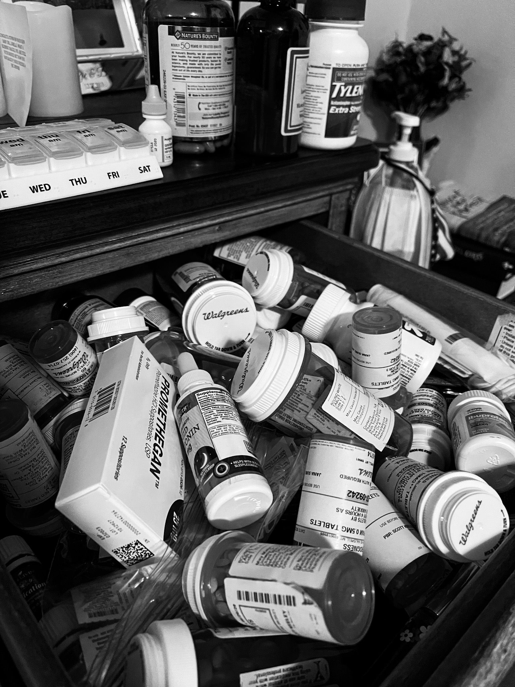
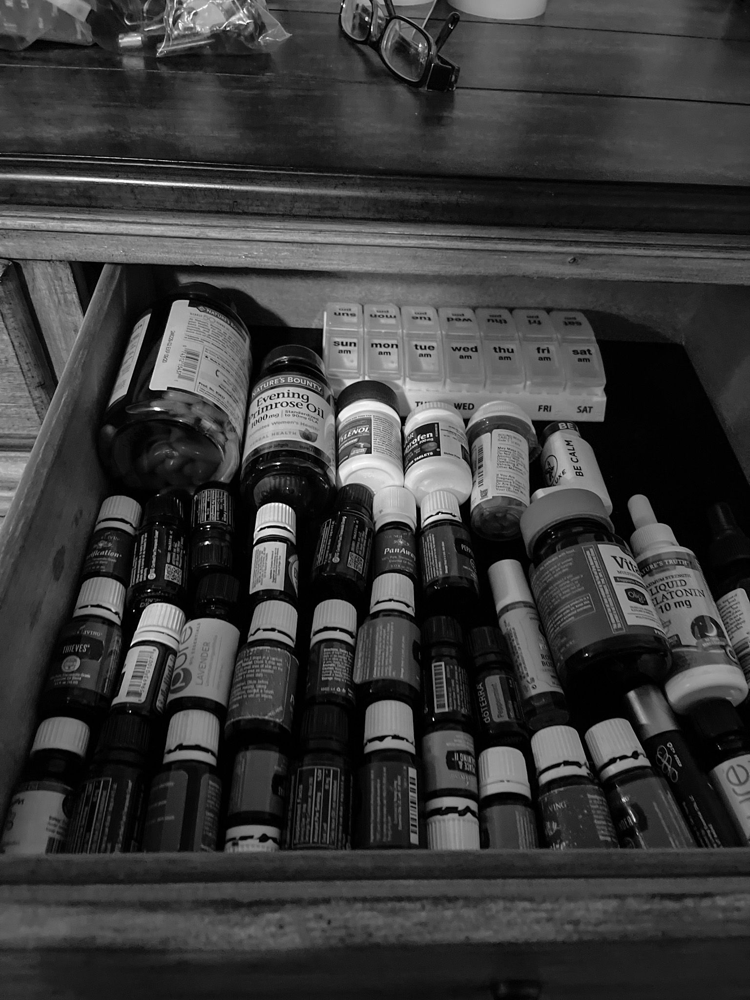

I have walked what feels like 10 life-times worth of medical mountains.
A guinea pig bite when I was in fourth grade would land me in the hospital. Oreo going to live with another family, Henrietta still welcome.
Falling off a horse, a collar bone broken. A homemade sign by my best friend Lisa in 7th grade, me feeling very 'cool'.
An ovarian cyst that would rupture requiring an emergency surgery.
Recovery leading to an anaphylaxis reaction to Hydromorphone. My dad yelling down the sleepy hospital hallway,
HELP! My daughter needs help!
That same doctor giving my 18-year old self the talk,
You will likely have a hard time getting pregnant, if at all. There was a lot of damage.
Two other visits to the E.R. due to ruptured cysts. Insert embarrassing parental conversations surrounding surgery and my uterus.
Salmonella in the Philippines. A scorpion bite in Honduras, my arm swelling and hard, no medical access.
It looks OK to me, we'll keep an eye on it. My friend who had previously been an OR nurse advised me.
A week long stay at United Hospital in downtown Saint Paul, unable to eat, intense stomach pain. My fiancé by my side, taking notes, keeping each new doctor on track as they attempted to figure out what was wrong.
Have you recently lost 300+ lbs.? A House-esque doctor would ask.
No, I've always been 100lbs or less.
You have a stomach the size of a 300+lb woman. You should go to the Mayo Clinic to see a professional.
Trips to the Mayo, the diagnosis of Gastroparesis, steroid shots, a Mayo nutritionist my sister and mom still joke about, "what about the silly Nut Lady..."
Have you tried....NUTS?
YES LADY! YOU DON'T THINK I'VE TRIED EVERYTHING? I HAVEN'T EATEN A SOLID FOOD IN MONTHS!
AND NO ENSURE DOES NOT TASTE GOOD...
The loss of our sweet baby Selah, the blood, the trauma in a Maryland hotel room at a wedding.
Do you REALLY need a wheel chair? The woman at the airport would ask.
My husband looking at her through teary eyes.
Yes ma'am, we just lost our baby, she is weak, she needs the chair.
The compassion. The words my husband often says to me now if I'm frustrated with someone.
"You never know, they could be going through the worst day of their lives."
Infertility treatments, a map of our likelihood of ever getting pregnant, the odds NOT in our favor.
The coffee mug that broke in my hand while doing dishes, causing a gash showing my bone.
"I HAVE TO GO MOM, I CUT MYSELF REALLY BAD"
Two tendons cut in my right wrist, losing the ability to use my right hand.
You will need surgery, how does tomorrow sound?
A brilliant hand surgeon would ask, ultimately giving me back the function of my dominate right hand.
Riding a horse for the first time after months of recovery, feeling FREE. Not aware I was 4 weeks pregnant with our baby boy Lachlan.
Two beautiful babies.
Falling off a horse when my second was little, now breaking my right arm. Nursing him with my purple cast.
And then the greatest battle of them all. Hyperemesis Gravidarum.
Not being believed by some, fought for by others. Feeling like I was insane. Trying EVERY possible option under the sun. Denying I needed them, dehydrated, unable to walk, taking them again. Trying every possible thing EVER!
YES! I tried ginger and crackers.
A joke us HG survivors call "I WAS GINGERED!!" Happening daily in my support group, Doctors not believing the woman's nausea and vomiting is real.
Asking them while in the ER due to severe dehydration if they've tried ginger-ale or drinking water.
As if us women are dumb. As if we haven't battled as hard as possible to not end up in the E.R. with our precious baby inside our wombs.
A postpartum hemorrhage that would be the most dangerous of all, seeing my body below me.
Jesus in the corner of that trauma room saying,
You my dear daughter will SURVIVE, and I love you. I love women. I don't desire this for the ones I love. May science and medicine continue to make that possible.
In hindsight, the worst of all was not being believed. Feeling ashamed as a woman. As if I didn't fight hard enough. As if what I was doing to simply survive was selfish.
We decided she looks totally normal and beautiful, considering the Coca-Cola you drank that's amazing..
Cue the continued questioning of myself, "maybe I shouldn't have drank that Cola a day?"
My husband reminding me that it was what helped keep me alive, the only fluids I could keep down at the time, the extra empty calories being a bonus.
I have passed off the pain of not being believed for years. Likely because as a white woman living in America, I have for the most part been trusted.
I now realize the pain it is to feel as if you can't be trusted despite knowing FULL WELL YOU ARE DOING THE BEST YOU CAN!
So here I am, cleaning out my closet, cleaning out my dumpster fire of a medicine drawer.

The pharmaceuticals that we tested, we tried, the ones we ultimately landed on due to their effectiveness in keeping me alive.
All symbolically laying on top of my essential oils, my attempts at doing the best I could to prevent the onslaught of medication and to remain 'natural'.

But to my great effort, it was not enough. The medications scientists have spent years, decades toiling over so a girl like me could survive piled on top.
The advancing of medicine so a woman like me could bring her beautiful and healthy baby girl into this world.
This is my miracle. The miracle of modern medicine that I will rejoice with Jesus in.
So to my sweet Jesus,
"Thank you for your love of us. For your love of those who have been historically marginalized. For your love of us women. From that prostitute who poured perfume on your feet, to the one centuries later watching my happy and healthy babies rejoicing over their baby sissy."